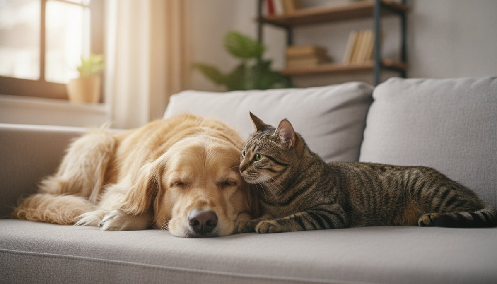

Do Dogs and Cats Get Along?

"Fighting like cats and dogs" is one of the oldest clichés in the language — and one of the most misleading. Millions of households share a roof with both species peacefully, and surveys of multi-pet homes find the two often end up as nap buddies rather than rivals. The truth is more reassuring than the saying: most dogs and cats can learn to live together, and many become genuine friends. Success just depends far less on the fact that one barks and one meows, and far more on the individual animals and how they're introduced.
Where the rivalry myth comes from
Dogs and cats aren't natural enemies so much as they're speaking two different languages. Animal behaviorists point out that many of their signals mean the opposite thing, which sets up honest misunderstandings:
- A wagging tail on a dog usually means excitement or friendliness; on a cat, a thrashing tail signals irritation or that a swat is coming.
- A dog's bouncy play bow ("let's play!") can read as a charge to a cat, who would rather not be chased.
- A direct stare is polite curiosity to a dog but a threat to a cat, while a cat's slow blink — a sign of trust — sails right past most dogs.
- Many dogs carry some prey drive, so a cat sprinting away can trigger a chase instinct that has nothing to do with aggression and everything to do with movement.
None of this means they're doomed to fight. It means the first impressions need to be managed by us, so a wagging tail and a flicking tail don't get mistranslated into a scuffle.
What actually predicts whether they'll get along
The American Kennel Club and feline behavior experts tend to agree on the factors that matter most — and breed is only one of them:
- Individual temperament. A laid-back, confident dog and a bold, unflappable cat is the dream pairing. A nervous cat plus a high-arousal dog is the hardest.
- Age and history. Animals raised around the other species, or introduced while young, adapt the most easily. A kitten and a gentle adult dog often bond quickly; two set-in-their-ways adults take more patience.
- Prey drive and energy. Calm, lower-drive dogs coexist with cats far more readily than dogs bred to chase.
- Early socialization. A dog that learned as a puppy that cats are normal, and a cat that isn't terrified of dogs, start way ahead.
Dog breeds that tend to do well with cats
These are tendencies, not guarantees — the individual dog always matters more than the label — but breeds with gentle, people-focused temperaments and lower prey drive often share space happily: Golden Retrievers, Labrador Retrievers, Cavalier King Charles Spaniels, Basset Hounds, Bichon Frises, Pugs, Newfoundlands and many easygoing shelter mixes.
Dogs that need extra care around cats
Some breeds were developed specifically to chase, and a fleeing cat can switch on that hardwired instinct. With sighthounds (Greyhounds, Whippets), many terriers, and certain herding and northern breeds, coexistence is absolutely possible — plenty live happily with cats — but introductions should be slower, more carefully managed, and never off-leash until you're certain.
How to introduce a dog and a cat the right way
This is where most success or failure is decided. The method recommended by the ASPCA and veterinary behaviorists is built on one idea: go slow and let them set the pace. Rushing a face-to-face meeting is the single most common mistake. Plan on days to a few weeks — sometimes longer.
- Start fully separated. Give the newcomer its own room with food, water, a bed and (for a cat) a litter box. Let each animal settle and get used to the sound and smell of the other through a closed door.
- Swap scents. Rub a cloth on one pet and place it near the other's feeding area, and rotate bedding between rooms, so the new smell becomes associated with good things rather than surprise.
- Feed on opposite sides of the door. Two pets eating calmly with only a door between them learn that the other's presence predicts dinner, not danger.
- Try controlled visual contact. Use a baby gate or cracked door so they can see each other briefly without full access. Keep sessions short and end on a calm note.
- Hold leashed, supervised meetings. Keep the dog on a loose leash and let the cat approach or retreat on its own terms. Never restrain or hold the cat in place — it must always have an escape route.
- Reward calm, redirect chasing. Praise and treat both animals for relaxed behavior. If the dog fixates or lunges, calmly redirect to a toy or step back a stage. Never punish — it just adds fear to the association.
- Only go unsupervised once both are reliably relaxed — and even then, separate them when you're out until you're fully confident.
Set the home up for peace
A well-arranged home does half the work. The golden rule is that the cat always has a way out and a place up high — cat trees, shelves and counters let it observe from safety and step away when it's had enough. A few more essentials:
- Separate, undisturbed feeding stations. Feed the cat somewhere the dog can't reach. Beyond keeping the peace, this prevents a curious dog from raiding the cat's bowl — cat food is too rich for dogs, and dog food lacks the taurine cats need.
- A dog-proof litter box. Many dogs are drawn to the litter box, which is unsanitary and stressful for the cat. A covered box, a baby gate, or a high spot solves it.
- A retreat for each. The cat needs vertical escape space; the dog needs a crate or bed that's strictly off-limits to the cat.
- Don't make them compete. Plenty of toys, beds, water bowls and one-on-one attention so neither feels it has to guard resources.
One safety note that's easy to forget in a two-pet home: animals share floors, counters and dropped food, and what's harmless to one species can be dangerous to the other. It's worth keeping the toxic-food basics in mind — you can look up anything in seconds with our free food checker, or skim the full lists of foods toxic to dogs and foods cats should never eat.
Warning signs — and when to get help
A little hissing, posturing or wariness in the early days is normal. What isn't normal is sustained tension that doesn't ease with time. Watch for a dog that obsessively stalks or fixates on the cat, a cat that stops eating, hides constantly or stops using the litter box, or any contact that escalates to real fighting or injury. Those are signs to slow down, re-separate, and bring in help.
So, will your dog and cat be friends?
Realistically, you're aiming for one of three outcomes: close companions who play and sleep together, easygoing roommates who share space comfortably, or a polite truce where they simply ignore each other. All three are wins. Not every pair becomes best friends, and that's perfectly fine — calm coexistence is a complete success. Give it patience, manage those first impressions, respect each animal's need for space, and the odds are firmly in your favor.
By the CanMyPet Editorial Team · Reviewed against guidance from the ASPCA, the American Kennel Club (AKC) and veterinary behavior sources · Published June 2026.